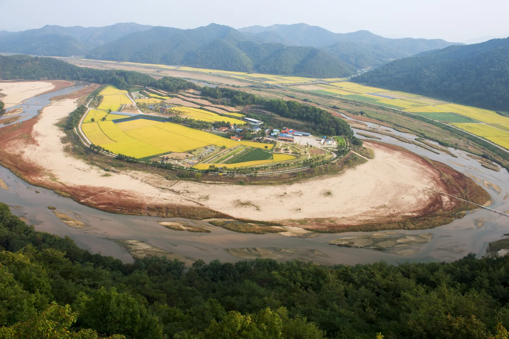
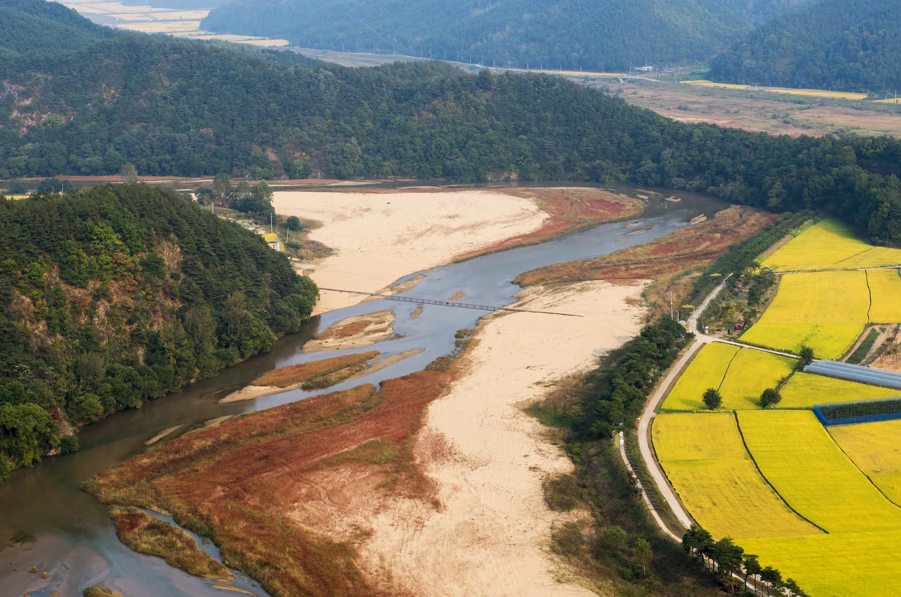
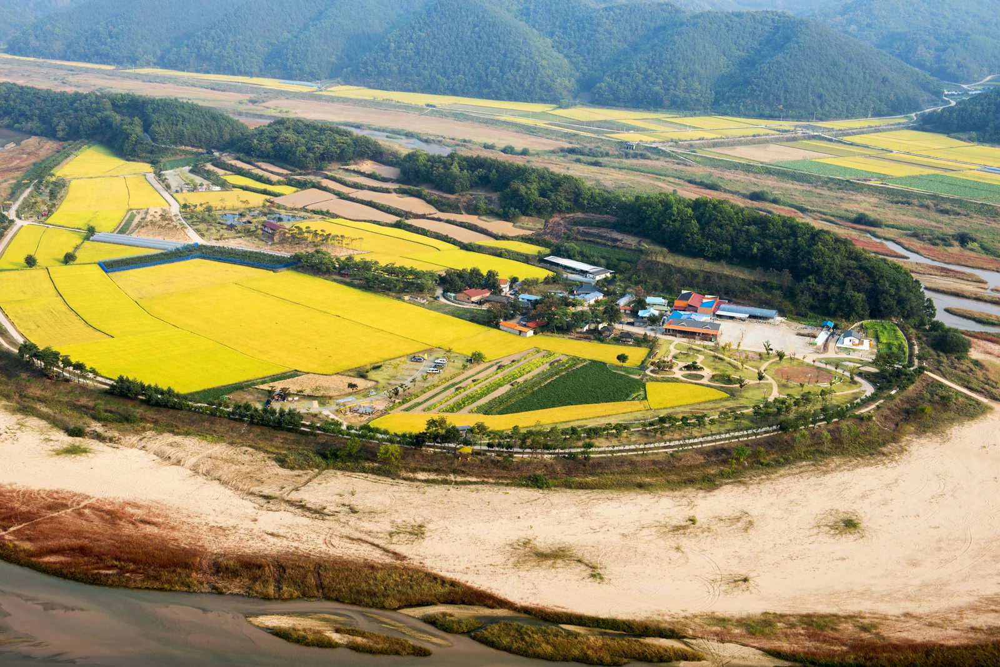
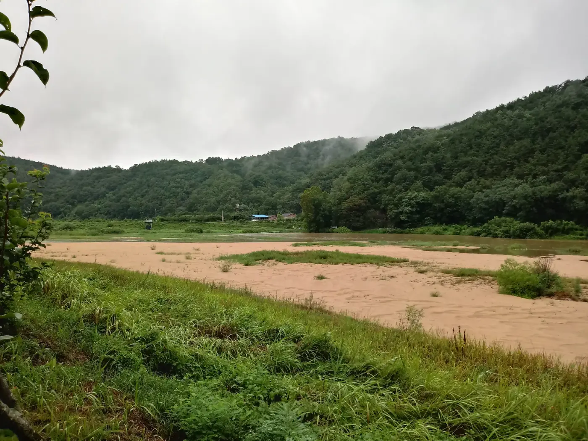
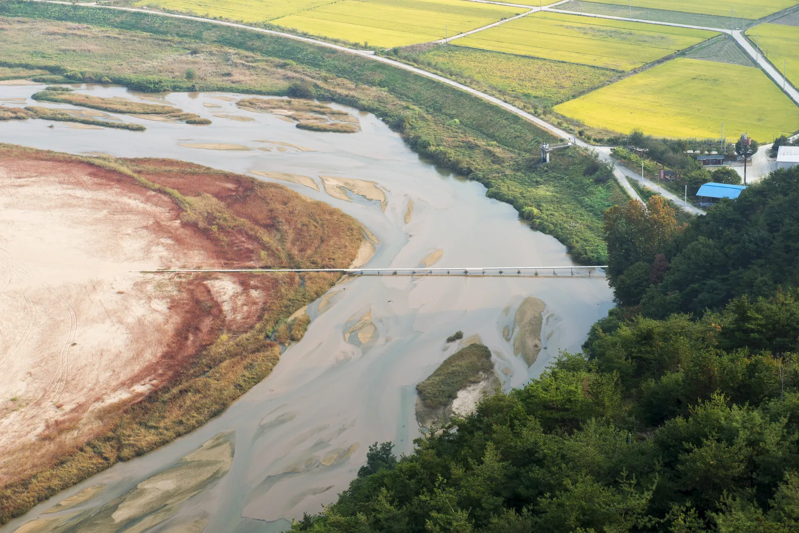
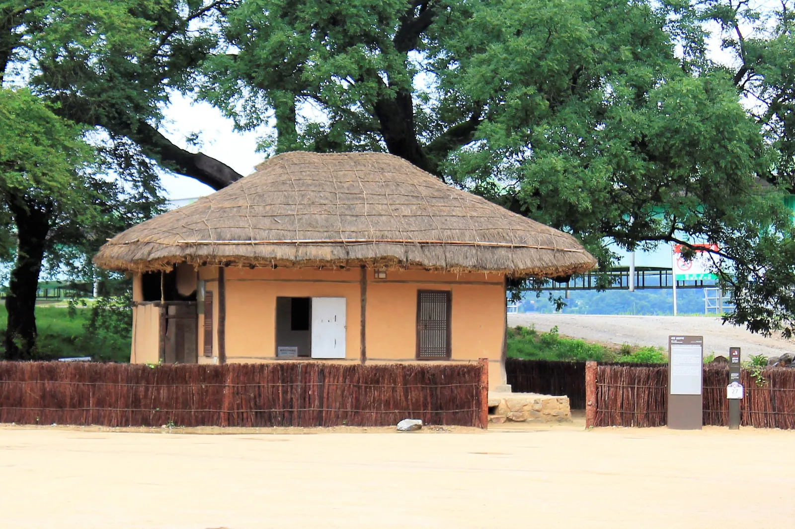

▲ 회룡대에서 내려다본 예천 회룡포. 내성천이 마을을 350도 휘감아 도는 모습이 한눈에 들어온다 사진=Wikimedia Commons (KOGL Type 1, 예천군청)
1. 왜 회룡포인가 — 350도로 마을을 감아 도는 강
회룡포(回龍浦)는 낙동강 지류인 내성천이 경북 예천군 용궁면 대은리 일대를 350도에 가깝게 휘감아 도는 '육지 속의 섬마을'이다. 강이 산줄기에 막혀 방향을 크게 틀며 마을을 원형에 가깝게 둘러싸는 지형이 마치 용이 몸을 휘감아 도는 듯하다 하여 회룡(回龍)이라는 이름이 붙었다. 2005년 8월 국가지정문화재 명승 제16호로 지정됐고, KBS 드라마 '가을동화'의 촬영지로 알려지며 전국적인 인지도를 얻었다. 마을 자체는 크지 않아 한 바퀴 둘러보는 데 1시간이 채 걸리지 않지만, 강 건너 산 중턱 전망대에서 내려다보는 물돌이 전경과 마을 안으로 걸어 들어가는 체험이 함께 있어 반나절 코스로 알맞다.

▲ 내성천이 넓은 백사장과 갈대밭을 두르며 마을을 350도 휘감아 도는 회룡포의 항공 전경 사진=Wikimedia Commons (KOGL Type 1, 문화재청)
2. 가는 법과 주차 — 진입로가 두 곳으로 나뉜다
회룡포는 전망대(회룡대) 쪽과 마을(뿅뿅다리) 쪽 진입로가 강을 사이에 두고 서로 다른 방향에 있다는 점을 미리 알아두면 동선을 짜기 편하다. 전망대 방향은 용궁면 향석리 쪽 장안사 진입로로 들어가 장안사 주차장에 차를 세운 뒤 걸어 올라가고, 마을 방향은 용궁면 대은리 쪽 도로를 따라 회룡포마을 주차장(대은리 374)에 차를 세운 뒤 뿅뿅다리를 건너 들어간다. 두 곳 모두 무료 주차이며, 회룡포마을 주차장은 약 30대 규모다. 승용차로 두 주차장을 오가려면 강을 크게 돌아가야 하므로, 하루에 두 코스를 모두 볼 계획이라면 이동 시간을 넉넉히 잡는 것이 좋다.
고속도로를 이용할 경우 중부내륙고속도로 점촌함창IC 또는 중앙고속도로 예천IC(예천군 보문면)에서 접근할 수 있다. 출발지에 따라 두 나들목 중 더 가까운 쪽을 내비게이션으로 확인하는 것이 좋으며, 대중교통은 용궁면에서 시내버스를 이용하거나 경북선 용궁역에서 택시로 이동하는 방법이 있다.
▲ 가을 단풍이 든 강변 주차장의 일반적인 모습. 회룡포는 전망대·마을 방향에 각각 무료 주차장이 있다 이미지=AI 생성
📍 문의
예천군청 문화관광과 054-650-6395 · 용궁면사무소 054-650-6609
3. 둘러보는 동선 — 장안사·회룡대 전망에서 뿅뿅다리, 마을 둘레길까지
가장 무난한 동선은 장안사 → 회룡대 전망 → (차로 이동) → 뿅뿅다리 → 마을 둘레길 순이다. 장안사는 통일신라시대 창건으로 전하는 천년 고찰로, 산 중턱에 자리해 절 마당에서부터 이미 물돌이 지형의 일부가 보인다. 장안사 주차장에서 도보 약 10분을 더 오르면 회룡대(팔각정 전망대)에 닿는데, 여기서 내려다보는 350도 물돌이 전경이 회룡포의 대표 장면이다. 전망대에서 마을까지 내려가는 등산로를 따르면 15~20분 정도 걸린다.

▲ 회룡대에서 바라본 회룡포 마을. 벼가 익어가는 가을이면 마을 안 들녘이 황금빛으로 물든다 사진=Wikimedia Commons (KOGL Type 1, 예천군청)
마을 안으로 들어가려면 뿅뿅다리를 건너야 한다. 구멍이 뚫린 철제 발판으로 만들어진 다리로, 밟으면 발판 구멍 사이로 물이 뿅뿅 올라온다 하여 이런 이름이 붙었다. 원래는 낡은 외나무다리였던 것을 1997년 구멍 뚫린 철제 발판 다리로 다시 놓았다. 마을 진입 지점에는 제1뿅뿅다리, 그 반대편에는 제2뿅뿅다리가 있다.

▲ 회룡포 뿅뿅다리. 구멍 뚫린 철제 발판 다리로, 이 다리를 건너야 마을 안으로 들어갈 수 있다 사진=Wikimedia Commons (KOGL Type 1, 예천군청)
다리를 건너면 논밭과 민가가 들어선 마을이 나온다. 마을 둘레에는 강변을 따라 산책로가 나 있어 걸어서 한 바퀴 도는 데 1시간이 채 걸리지 않으며, 전기 자전거를 빌려 돌아볼 수도 있다. 예천군은 삼강주막·낙동강쌍절암 생태숲길·장안사·회룡대·회룡포·뿅뿅다리를 잇는 '회룡포~삼강 강변길'도 테마 코스로 안내하고 있는데, 구간별 정확한 거리와 소요 시간은 예천군 관광안내소(054-650-6033)에서 안내도를 받아 확인하는 것이 좋다.

▲ 뿅뿅다리를 건너면 만나는 회룡포 마을 안쪽 모습. 논과 민가 사이로 산책로가 나 있다 사진=Wikimedia Commons (KOGL Type 1, 예천군청)
4. 가을에 가면 더 좋은 이유
회룡포는 사계절 다 매력이 있지만, 가을에는 마을을 둘러싼 논이 황금빛으로 물들면서 강의 곡선과 색의 대비가 뚜렷해진다. 강변 백사장과 그 위 붉게 물든 갈대·억새 군락도 이 시기 볼거리다. 다만 뿅뿅다리는 철제 발판 사이로 물이 넘나드는 구조라 비가 온 뒤에는 발판이 미끄러울 수 있어 걸을 때 주의가 필요하고, 우기 직후에는 수위가 높아져 다리를 건널 수 없는 경우도 있으니 방문 전 예천군청이나 용궁면사무소에 통행 가능 여부를 확인하는 것이 안전하다. 주말과 단풍철 성수기에는 회룡대 전망대와 뿅뿅다리 주변에 방문객이 몰려 좁은 진입로가 혼잡할 수 있으므로, 오전 이른 시간 방문을 권한다.

▲ 회룡포를 휘감아 흐르는 내성천의 백사장 강변 사진=Wikimedia Commons (CC BY-SA 4.0)

▲ 가을이면 붉게 물드는 내성천 모래톱과 갈대밭 사이로 다리가 놓여 있다 사진=Wikimedia Commons (KOGL Type 1, 문화재청)
5. 주변 연계 코스 — 삼강주막, 예천 곤충생태원
회룡포에서 차로 15분 남짓 이동하면 삼강주막(예천군 풍양면 삼강리길 27)에 닿는다. 내성천·금천·낙동강 세 물줄기가 만나는 지점에 남은 이 초가 주막은 1900년경 지어진 것으로 추정되며, 낙동강 뱃길을 오가던 이들이 묵어가던 마지막 주막으로 알려져 있다. 2005년 경상북도 민속문화재(현 민속문화유산)로 지정됐고, 주모 할머니가 외상값을 칼끝으로 벽에 그어 기록했다는 일화가 전해진다.

▲ 낙동강 700리에 마지막 남은 주막으로 알려진 예천 삼강주막 사진=Wikimedia Commons (CC BY-SA 3.0)
가족 단위 방문객이라면 회룡포와는 반대 방향인 예천군 효자면의 예천곤충연구소 곤충생태원(효자면 은풍로 1045)도 고려할 만하다. 나비 터널과 동굴곤충체험관, 모노레일 등을 갖췄으며, 이용 시간은 하절기(4~10월) 오전 9시부터 오후 6시까지다. 휴관일과 입장료, 주차 규모는 시기별로 바뀔 수 있어 방문 전 예천곤충연구소(054-652-5876)에 확인하는 것이 좋다. 회룡포와 같은 방향이 아니므로 하루 코스로 묶으려면 이동 거리를 감안해 일정을 짜야 한다.
📍 방문 전 확인할 것
삼강주막·곤충생태원 모두 회룡포에서 별도 방향으로 이동해야 한다. 뿅뿅다리 통행 가능 여부는 강수 상황에 따라 달라질 수 있으니 방문 전 예천군청 문화관광과(054-650-6395)에 확인하는 것이 좋다.
6. 하루 코스로 정리하면
오전에 장안사 주차장에 도착해 장안사와 회룡대 전망대를 둘러본 뒤, 차로 이동해 회룡포마을 주차장에 차를 세우고 뿅뿅다리를 건너 마을 둘레길을 걷는다. 점심 무렵에는 차로 15분 거리인 삼강주막에 들러 강이 만나는 풍경과 옛 주막을 함께 보고, 여유가 있다면 방향을 달리해 예천 곤충생태원까지 하루 코스로 묶을 수 있다.
✅ 출발 전 확인할 것
· 전망대(장안사)와 마을(뿅뿅다리) 진입로가 서로 다른 방향임을 미리 확인
· 뿅뿅다리 통행 가능 여부는 강수 후 예천군청·용궁면사무소에 문의
· 주말·단풍철에는 오전 이른 시간 방문 권장
· 삼강주막·곤충생태원 등 연계 코스는 이동 방향이 다르므로 동선 미리 계획